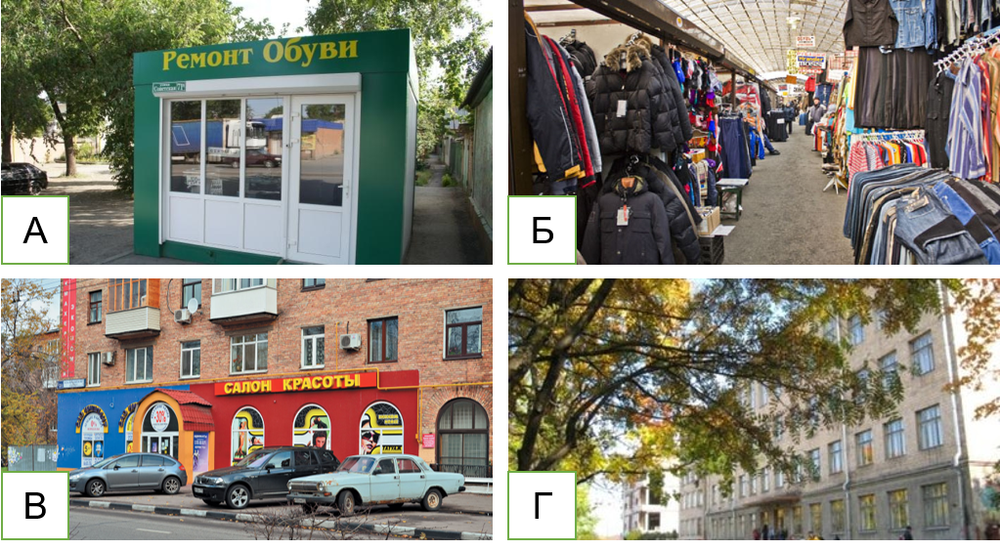
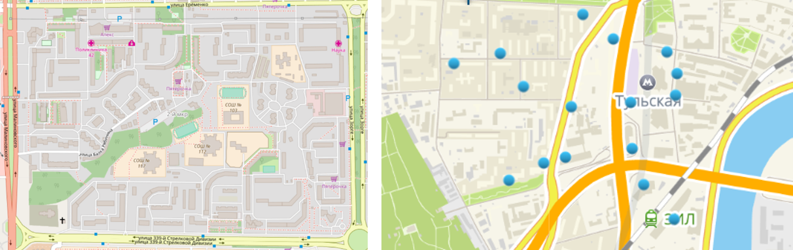
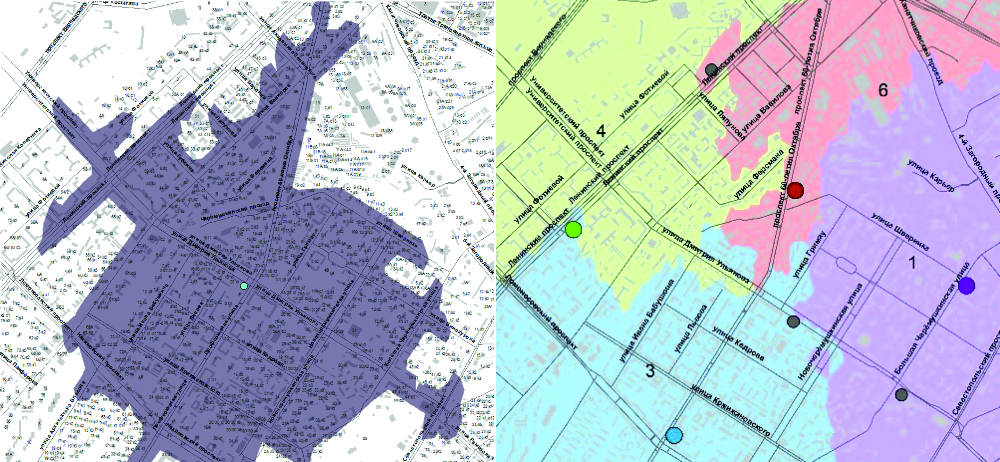
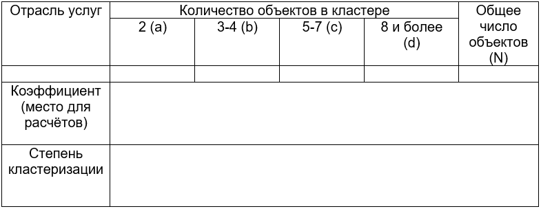
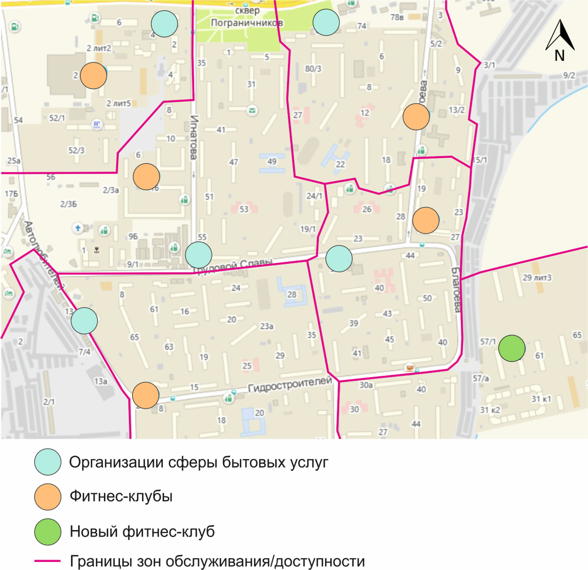
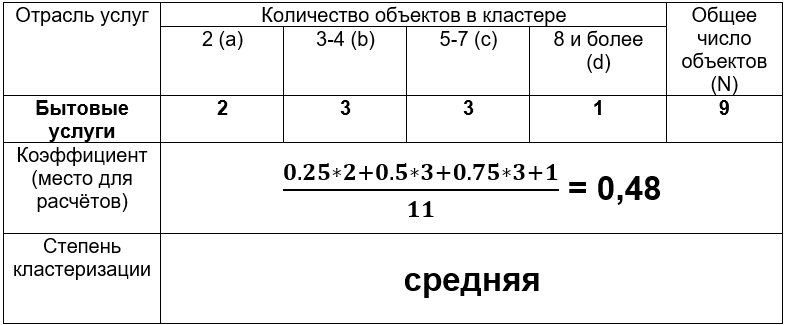

8 Сфера обслуживания
8.1 Теоретическая часть
Города являются основными центрами экономической активности. Высокая плотность населения делает их подходящими рынками для реализации различных видов товаров и услуг.
В современном мире сектор услуг доминирует в структуре экономик развитых и большинства развивающихся стран, как по числу занятых, так и по вкладу в ВВП38. Услуга – это вид деятельности, в процессе которой не создаётся нового материального продукта, но изменяется качество уже имеющегося. Другими словами, услуги – это блага не в форме вещей, а в форме работы, не предполагающей создания новых вещественных продуктов.
Услуги делятся на 2 крупные категории - рыночные и нерыночные. Первая категория наиболее обширна, в неё входят все виды деятельности, которые являются платными для потребителей (например, услуги парикмахера, нотариуса или тренера по фитнесу). Нерыночные услуги оказываются бесплатно, имеют высокое социальное значение и часто финансируются из бюджета (например, образовательные услуги в школах, медицинские в поликлиниках).
Существует множество других подходов к классификации услуг, однако наиболее распространённым является их разделение на материальные и нематериальные, а также их типология по отраслям. Материальные услуги связаны с непосредственной работой с имуществом клиента (примером, может служить упаковка подарков, изготовление ключей и т. д.). Нематериальные осуществляются напрямую с клиентом (например, образовательные, консультационные, банковские услуги).
По отраслям можно выделить следующие виды услуг39:
- Торговля, гостиницы и общественное питание (магазины40, рынки, отели, рестораны и кафе)
- Транспорт, хранение и связь (такси, службы доставки, складские хозяйства, интернет-провайдеры)
- Финансы, юридические услуги и страхование (банки, нотариальные конторы)
- Образование и наука, культура и искусство (школы, музеи, театры)
- Здравоохранение, физическая культура и спорт (больницы, лаборатории, фитнес-клубы)
- Жилищно-коммунальные услуги (теплоснабжение, текущий ремонт)
- Бытовые услуги (салоны красоты, фотоателье, прачечные)
- Государственное управление (административные учреждения – в т.ч. полиция, МЧС, суды)
Вместе с эволюцией мировой экономики сфера услуг становилась всё более развитой. В Древности и Средние века преобладал обмен товарами – готовыми результатами аграрного или ремесленного труда. Интенсивная урбанизация в последние два столетия привела к развитию специализации работников – появлению узконаправленных видов услуг. В современном мире экономика наиболее развитых стран характеризуется широким набором высокоприбыльных видов услуг, связанных с IT-сферой41 и финансами.
Предприятия сферы услуг являются важным элементом городского пространства. В рамках функционального зонирования отдельные кварталы могут иметь выраженную специализацию на том или ином виде услуг (административные, социальные, торговые). Однако подобные предприятия размещаются и внутри других зон (жилых, деловых, промышленных).

Рисунок 8.1. Типы объектов сферы услуг. А - некапитальные строения (ларьки), Б - рынки, В - первые этажи жилых домов, Г - отдельно стоящие строения Источник: Информационный портал Юга.ру, Справочник Адреса.Телефоны
Объекты сферы услуг могут быть размещены в различных условиях. Виды услуг, не требующие большой площади помещения, обычно располагаются в ларьках (А), которые можно перемещать на новое место без значительных затрат, и чья установка обычно имеет упрощенные требования законодательства. Зачастую подобные торговые точки оказывается удобнее размещать на одном специально выделенном участке – рынке (Б). Исторически именно этот вид размещения предприятий сферы услуг (в первую очередь, торговых) сложился самым первым. Продавцам было выгодно находиться в одном месте, т.к. таким образом клиент, приходящий за одним товаром (например, хлебом), покупал бы также и другие (овощи).
В современных городах рынки часто заменяются торговыми центрами или объектами сферы услуг на первых этажах зданий (В). В виде отдельно стоящих строений (Г) обычно размещаются школы, детские сады, больницы, бизнес-центры, однако и они могут быть локализованы на первых этажах жилых домов.
Картографирование сектора услуг может носить совершенно разный характер. Существует два основных принципа отображения таких объектов: - Площадной (типы Б и Г) - выделяются непрерывные территории с доминированием тех или иных отраслей услуг. Если площадные объекты занимают бо́льшую часть квартала городской застройки, характер использования объектов определяет функциональный тип использования территории (обычно, общественно-деловая зона);
- Точечный (типы А и В) - отдельно обозначается каждый объект вместе с его характеристиками (например, размером значка может быть охарактеризована площадь помещения, формой – тип объекта, а цветом – отрасль). В этом случае объекты сферы услуг размещаются в пределах территории, которая имеет в качестве основной иную функцию помимо оказания услуг, чаще всего селитебную.
При маркировке предприятий сектора услуг необходимо обращать внимание на вывески, которые могут содержать информацию о видах деятельности, стоимости услуг, владельцах объекта и режиме работы.
Для оптимального размещения предприятий сектора необходимо учитывать совокупность целого ряда характеристик территорий (физико-географических, экономико-географических, социально-экономических). Их анализом занимается специальная дисциплина, находящаяся на стыке географии, экономики и социологии - географический маркетинг (геомаркетинг). Главным принципом при выборе места является извлечение максимальной прибыли от сочетания факторов размещения в конкретном месте.
Основные задачи геомаркетинга можно сформулировать следующим образом:
- Выбор оптимального размещения объекта и его площади (Где продавать?)
- Планирование деятельности в соответствии с учётом размещения клиентов (Что продавать и в каких объемах?)
- Оценка и прогнозирование объёмов реализации товаров и услуг (Что и в каких объемах я буду продавать через несколько лет?)
В последнее время все более широким становится использование геоинформационных технологий для решения подобных задач. Однако в условиях растущего спроса на геомаркетинговые услуги со стороны бизнеса традиционные методы полевых исследований остаются востребованными, а зачастую – единственными возможными для выбора места размещения предприятий.
Основными факторами размещения предприятий являются различные характеристики возможного местоположения объекта и потенциальных потребителей.
Таблица 8.1. Факторы размещения объектов сферы услуг согласно концепции геомаркетинга42
| Факторы размещения | Анализируемые показатели |
|---|---|
| Есть ли здесь покупатели и легко ли сюда добраться? | Плотность населения Транспортная доступность (количество пешеходов, автомобилей и маршрутов общественного транспорта; время в пути) |
| Кто эти покупатели? | Структура населения по доходам, возрасту, образованию |
| Где локализованы покупатели? | Зоны рыночного охвата – территория, которую обслуживает данное предприятие в отличие от конкурентов |
| Есть ли здесь другие объекты сферы услуг? Какие? | Взаиморасположение с другими предприятиями (конкуренция или кооперация и кластеризация с объектами других отраслей сферы услуг) |
| Как часто клиенту будут нужны услуги? | Характер потребительского спроса (повседневный, периодический, эпизодический) |
| Насколько высокими будут издержки? | Стоимость земли, аренды помещений, средняя заработная плата работников |
Отдельно рассмотрим те из факторов, которые являются наиболее важными с точки зрения географии, а их влияние оценивается с помощью полевых методов исследований:
- Наличие покупателей и доступность территории являются основными требованиями при размещении предприятий. Они определяют потенциальный объем спроса на предприятие со стороны клиентов. В зависимости от того, что является первоочередным – наличие потребителя в районе предполагаемого размещения объекта или его возможность добраться до него, все виды услуг можно условно разделить на две группы:
А. Услуги, приуроченные к местам с высокой плотностью населения, обычно связаны с удовлетворением повседневного спроса (магазины продуктов, бытовые услуги). Местами локализации могут быть точки как постоянного (жилые районы), так и временного нахождения людей (например, на период рабочего дня – бизнес-центры, университеты)43. В таком случае основным признаком, позволяющим идентифицировать спрос, является плотность населения.
Доступность для потребителей может считаться вторичным фактором, который определяет конкретное место размещения в пределах выделенных районов максимальной концентрации населения. Обычно такими локациями оказываются центры кварталов (например, для школ и детских садов44, участковых отделений полиции) или места с наибольшим потоком людей в течение дня (станции метро, остановки).

Рисунок 8.2. Локализация услуг повседневного спроса: школы в центре кварталов (слева), магазины, приуроченные к потокам людей от станции метро (справа). Источник: картографические материалы OpenStreetMap и 2GISБ. «Экстерриториальные»45 услуги ориентированы на периодический или эпизодический спрос, который формируется на территории большего масштаба. В таком случае первичным становится транспортная доступность – клиентам должно быть удобно быстро добраться до локации. Классическими примерами такого расположения являются крупные торговые центры или магазины одежды на главной торговой улице города (Тверская в Москве, Невский проспект в Санкт-Петербурге, Большая Садовая в Ростове-на-Дону). В основном они приурочены к крупным транспортным магистралям с удобными развязками, станциям метро или центральным остановкам общественного транспорта.
- Современные города, вне зависимости от их размера и функций, отличаются все большей социальной неоднородностью. Данная особенность требует при размещении предприятий сферы услуг сопоставления социального портрета их среднего пользователя с социальным портретом района.
В данное понятие входит целая совокупность социальных характеристик жителей района, которые влияют на поведение покупателей и тем самым формируют величину и структуру потребительского спроса. Наибольшее влияние на них оказывают:
уровень доходов населения - базовая величина, определяющая уровень покупательной способности населения, т.е. количество товаров и услуг, которые они могут приобрести при располагаемом доходе. Согласно основам экономической теории, потребности людей заметно отличаются в зависимости от их уровня доходов. Так, еще в XIX в. немецкий ученый Э. Энгель установил46, что по мере роста доходов, расходы на питание возрастают в меньшей степени, чем на предметы длительного пользования и персональные услуги. Большинство предприятий сферы услуг ориентированы на определенную категорию потребителей по уровню доходов.
возрастно-половая структура населения является важным фактором при размещении специализированных услуг для таких широких когорт населения как молодёжь или люди преклонного возраста. Так, в районе, где преобладают молодые, потенциально выше спрос на услуги, относящиеся к категории досуг и развлечения (клубы, бары, кафе, столовые). Примером услуг, сегментированных по полу, могут быть салоны мужских стрижек (барбершопы) или услуги косметолога (макияж).
уровень образования (без образования, среднее, высшее) часто не является жёстким основанием для сегментирования потребителей, однако он может служить косвенным индикатором «новаторства» потребителя. Лица с высшим образованием более вероятно будут пользоваться «сложными» услугами, связанными с IT-сферой, дизайном, финансами и т. д.
Определение социального портрета района – достаточно сложная задача, которая требует больших по объёму работ (социологические опросы, маркетинговые исследования). Из-за высокой стоимости и затрат времени, зачастую они невозможны даже при решении реальных задач размещения предприятий. В этой связи географы используют целый ряд косвенных признаков, которые можно диагностировать в полевых условиях. На их основе можно определить базовые характеристики потенциальных потребителей:
- Уровень благоустройства района – качество асфальтового покрытия, регулярность уборки улиц и дворовых территорий, наличие охраны или консьержа, ограничений на вход (въезд) на территорию;
- Состояние жилого фонда: год постройки зданий, регулярность наружного и квартирного ремонта (состояние крыш, наличие теплоизоляции зданий, пластиковых окон); для частного сектора и сельской местности – состояние заборов;
- Состояние автомобильного парка: ценовой сегмент, возраст (новые, б/у), страна-производитель (отечественные, иномарки российской сборки, иномарки);
- Ценовая категория существующих предприятий сферы услуг: наличие объектов бюджетного, среднего, премиального класса;
- Характер рекламных объявлений: тематика, целевая аудитория.
Данный список далеко не исчерпывающий. Приветствуется проявление креативности участниками практикума и предложение собственных маркирующих признаков в соответствии со спецификой отдельных городов.
- Важнейшей географической задачей геомаркетинга является необходимость определить формы пространственного взаиморасположения предприятий изучаемой отрасли. Принципиальным образом отличаются два типа взаимодействия:
Конкурирующие между собой предприятия обычно имеют конкретную территорию, для которой они специализируются в предоставлении услуг – зону обслуживания. Обычно её границы определяются временем, за которое клиент сможет дойти или доехать до объекта. Для этого строятся изохроны47 - линии равного времени доступности от определенной точки. Определение зон обслуживания производится путем сопоставления изохрон для существующих объектов отрасли. Если вся территория оказывается «распределена» между действующими предприятиями (как на рисунке 8.3), размещение нового объекта в ее пределах связано с определенным предпринимательским риском и может быть невыгодно, т.к. величина спроса для данного магазина будет незначительной.

Рисунок 8.3. Определение изохрон (слева) и зон обслуживания торговых предприятий (справа) по сети улиц в программном продукте ArcGIS. Выполнено авторами.В то же время предприятия одной или разных отраслей сферы услуг могут испытывать выгоду от близости положения. Обычно она связана с сокращением издержек от совместного использования инфраструктуры (например, офисы различных отделов государственных учреждений или точки общепита в ресторанных двориках), увеличения прибыли от притягивания клиентов смежных отраслей (продовольственные супермаркеты, магазины одежды и аптеки в торговых центрах) или предоставления большего разнообразия предлагаемых товаров одной отрасли (специализированные рынки, например, вещевые, автомобильные или так называемые «радиорынки»). В таких случаях формируются кластеры предприятий – сконцентрированные на некоторой территории группы взаимосвязанных компаний.
Кластеризация измеряется с помощью специальных соотношений, которые отражают долю объектов сферы услуг, расположенных поблизости от аналогичных предприятий. Входящими в кластер можно считать объекты, расположенные «через стену» либо друг напротив друга. В наиболее общем виде степень кластеризации можно выразить следующей формулой:
Где N – это общее количество предприятий, a - количество предприятий, расположенных в кластерах из 2 объектов, b - из 3-4 объектов, c - из 5-7 объектов, d - из более чем 8 объектов.
Коэффициент кластеризации безразмерен и может принимать значения от 0 до 1. Чем выше данный коэффициент, тем более кластеризованы предприятия сферы услуг. Расчёт может проводиться как для отдельных отраслей, так и для объектов сферы услуг в целом.
Таблица 8.2. Шкала оценки степени кластеризации объектов сферы услуг
| Значения коэффициента | 0…0,2 | 0,2…0,4 | 0,4…0,6 | 0,6…0,8 | 0,8…1 |
|---|---|---|---|---|---|
| Степень кластеризации | очень низкая | низкая | средняя | высокая | очень высокая |
8.2 Практическая часть
Методические рекомендации для формулировки и выполнения задания:
Анализ размещения объектов сферы услуг в городах – трудоёмкая задача, требующая особого подхода к выбору исследуемой территории. Функциональные зоны города отличаются различной плотностью предприятий сферы услуг. Для центров городов, где выражены деловые и торговые функции, а также максимальны транспортные потоки, она высока. В то же время в жилых районах распределение объектов сферы услуг гораздо менее равномерно и не характеризуется высокой плотностью.
Центры городов могут характеризоваться наличием экстерриториального спроса (клиентами организаций являются жители всего города) в отличие от кварталов жилой застройки, где основными потребителями являются местные жители.
Учителю предлагается выбрать один из следующих типов полигонов для исследования:
- Участок в центре города, характеризующийся высокой плотностью и разнообразием объектов сферы услуг;
- Участок в пределах кварталов жилой застройки (например, спального микрорайона).
При условиях участия в занятии более 6 человек работа может проводиться в рамках небольших групп (3-4 человека). Каждой из групп предлагается выбрать одну из отраслей сектора услуг (см. список ниже). Подобное разделение обязанностей необходимо для формирования целостной картины факторов размещения в рамках каждого типа объектов. Затем полученные каждой группой школьников данные сопоставляются.
Время выполнения задания – 5 академических часов, включая 2 академических часа полевых работ и 1 час на выступления школьников с результатами творческих проектов. При камеральной обработке результатов полевого выхода школьники должны использовать данные, полученные в ходе прошлых занятий (карты плотности населения, функционального зонирования).
Этапы выполнения задания:
- Подготовка к полевому выходу
Перед полевым этапом работ необходима подготовка черновой картографической основы исследуемого полигона. На схеме участка должны быть отображены основные планировочные структуры – улично-дорожная сеть, отдельные здания и строения, остановки общественного транспорта, что необходимо для точной географической привязки исследуемых объектов.
Рекомендуемый размер картографической основы – лист А4, схема должна быть выполнена в масштабе с его обязательным указанием. Для экономии времени возможна распечатка фрагментов карт из открытых картографических источников (OpenStreetMap, Яндекс.Карты, 2ГИС и Google Maps).
Использование готовых карт в качестве шаблонов, а также непосредственно во время выполнения задания в качестве источника данных не запрещается, однако и не приветствуется. В данном случае у школьников могут не сформироваться навыки пространственного восприятия городской среды, что на взгляд авторов практикума является его основной задачей.
- Полевой этап
Каждая группа школьников выбирает для анализа один из следующих типов платных услуг:
Торговля, гостиницы и общественное питание (магазины, рынки, отели, рестораны и кафе);
Транспортировка, хранение и связь (почтовые отделения, службы доставки (в т.ч. почтоматы, места выдачи заказов), складские хозяйства, интернет-провайдеры);
Финансы, недвижимость, юридические услуги и страхование (банки, страховые организации, нотариальные конторы, агентства недвижимости);
Здравоохранение, физическая культура (частные больницы и клиники, лаборатории);
Бытовые услуги (салоны красоты, фитнес-клубы, прачечные, ремонтные мастерские)
Также для последующего этапа задания необходимо выбрать подтип услуг более узкой специализации внутри выбранной отрасли (например, фитнес-клубы среди бытовых услуг или хостелы среди торговли, гостиниц и общественного питания).
Все предприятия выбранной отрасли маркируются школьниками на подготовленной схеме (геометрическими значками в той части строения, где находится основной вход в предприятие). Отдельными значками отмечаются объекты выбранного подтипа.
Маршрут обхода участка выбирается в зависимости от возможности непосредственного обследования предприятий сектора услуг (сами объекты могут располагаться в офисе с закрытым доступом, однако рекламные баннеры и вывески обычно находятся снаружи).
- Камеральная обработка
По итогам полевого обследования участниками составляется чистовой вариант карты, содержащий все объекты выбранной отрасли услуг, а также организации, включённые в подотрасль для последующего анализа.
Для последующей работы участникам необходимо отобразить на карте зоны обслуживания предприятий узкой отрасли. Проведение границ должно происходить по принципу изохрон – по линиям примерно равного по времени пути до двух соседних организаций. Делимитация зон должна учитывать планировочную структуру исследуемого полигона (улично-дорожная сеть), а также возможные преграды (крутые уступы рельефа, водоёмы и водотоки, заборы). Итогом работы для каждой группы должна стать карта, отражающая расположение объектов сферы услуг (отрасли и подотрасли с возможными зонами обслуживания отдельных объектов).
Участники заполняют таблицу 8.3 для расчёта коэффициента кластеризации. С его помощью школьники определят принцип размещения предприятий разных отраслей (чем больше коэффициент, тем выше степень кластеризации).
Таблица 8.3

После заполнения таблицы производится расчёт коэффициента согласно формуле и производится его словесная оценка согласно приведённой шкале.
Следующим этапом задания является определение оптимального места (мест) размещения для нового объекта выбранной подотрасли (например, фитнес-клуба). Решение о размещении предприятия в том или ином месте принимается школьниками на основе полученных данных о возможных факторах размещения (в том числе социального облика района, который оценивается экспертным путем по маркирующим признакам, перечисленным выше) и оценки примерного размера зон обслуживания.
Необходимо отдельно обратить внимание участников практикума, что на предложенном участке может не быть оптимального места размещения предприятия выбранного вида услуг - например, из-за существующей высокой конкуренции и отсутствия территорий, находящихся вне зон обслуживания действующих предприятий. В этом случае группы должны быть готовы аргументировать свою позицию с учетом материала теоретической части практикума.
Участники групп готовят выступление, в котором им необходимо назвать основные факторы, влияющие на размещение предприятий в рамках исследуемой отрасли. Также в рамках доклада рассматриваются варианты размещения нового предприятия подотрасли и их подробное обоснование.
Необходимые материалы: планшеты для всех участников с предварительно составленной схемой исследуемого участка, простые и цветные карандаши, калькулятор.
Пример оформления выполненного задания:

Пример оформленной карты полигонаПример заполненной таблицы 8.3

Валовый внутренний продукт - показатель, отражающий совокупную стоимость всех конечных товаров и услуг, произведённых за год на территории страны.↩︎
Подобные типы выделяются и в официальной классификации отраслей экономики – Общероссийском классификаторе видов экономической деятельности (ОКВЭД), который используется в официальной статистике.↩︎
В последние годы часто используется термин ритейл (от англ. retail «торговля в розницу»), который понимает под собой розничные (поштучные, небольшими количествами) продажи конечному покупателю.↩︎
Информационные технологии (создание, передача, хранение и восприятие информации). В данную сферу входят все компьютеризированные отрасли с активным использованием различных видов данных (в том числе СМИ, научные исследования и т. д.)↩︎
Составлено авторами на основе работы: Цветков В. Я. Геомаркетинг: прикладные задачи и методы. – 2002.↩︎
В современной геоурбанистике принято отличать не только постоянную плотность населения (которую вы определяли в занятии №3), но и дневную – т.е. во время рабочего дня по будням.↩︎
Локализация объектов социальной сферы объясняется принятыми при плановой экономике градостроительными нормативами (СНиП), согласно которым на район с населением 3-5 тыс. чел. должна приходиться одна школа, при этом расстояние от жилых домов до образовательного учреждения по нормам не должно превышать 500 м. В современной России данные нормы являются рекомендуемыми, но не обязательными к исполнению.↩︎
То есть не привязанные к постоянному спросу только на определённой небольшой территории (например, в жилом квартале)↩︎
Кураков Л. П., Кураков В. Л. Словарь-справочник по экономике. - 1999.↩︎
Вид изолиний. От греческого isos «равный» + chronos «время».↩︎